アヒル・サウナハット・子ども・大人の実際のゲーム用 GLB を読み直し、同じカメラ・照明・倍率で描画した比較です。顔の近接と無彩色の表示を含め、色と形の問題を分けて確認します。
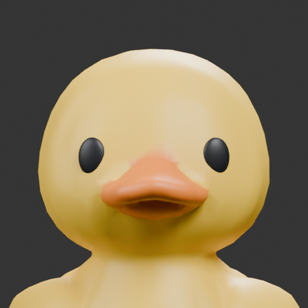
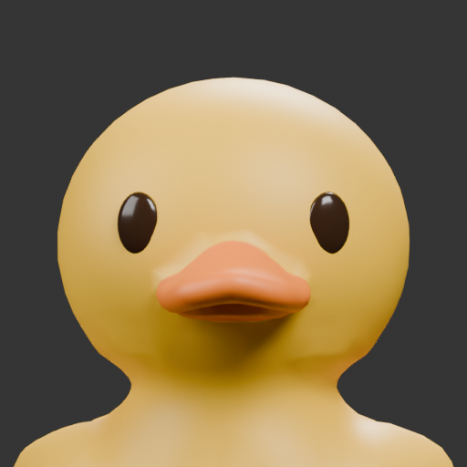
修正前 b2cac004808711a138d030c897934a5cfb5698cab5a103a4957ffc14b1f41cdc
修正後 75ca48aec7a8f19d2563dbd4a3f64940b3b299bf6f6d83d09e6283663d557ef2
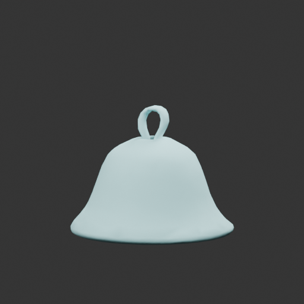
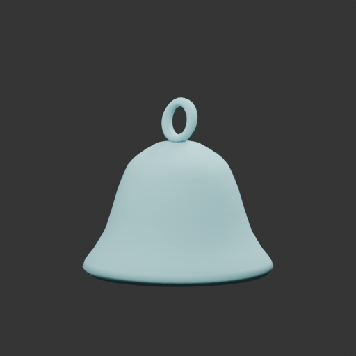
修正前 027796c5bba9e2f27fe8e9f5d6a5017f19e55521961e15998b8f90ba6bbe9102
修正後 e6362a9bdffa39b987d30540dbc8bce061b6c867bdddee563ebd0a1bcba7bce6
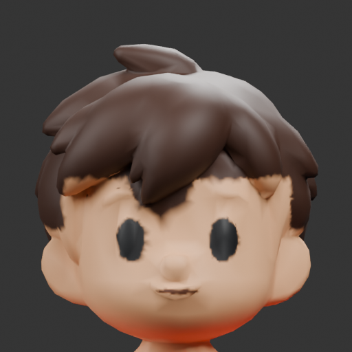
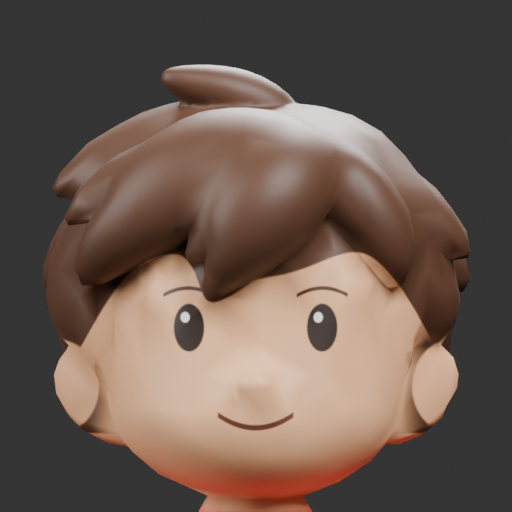
修正前 9d15324acce1d81b932628a7139c03a73cf36943be996d8db5b14c712bd9edca
修正後 31d2ea528cd03e9314e184a75ee1e2c85956254a8f82290eaa09687fd539d172
配布用GLB e69c7427abf6104526ac34072c57d8775adb27da4435ab53dd0a5c5ed29ef141。描画後に画像の不要メタデータだけを整理しています。形状・画像データが変わっていないことの記録。
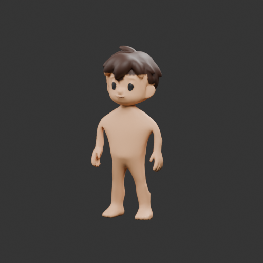
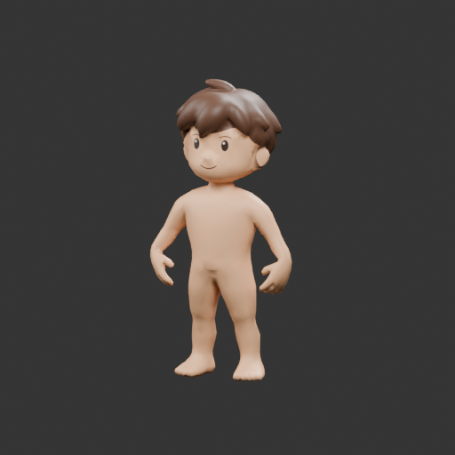
修正前 9d15324acce1d81b932628a7139c03a73cf36943be996d8db5b14c712bd9edca
修正後 31d2ea528cd03e9314e184a75ee1e2c85956254a8f82290eaa09687fd539d172
配布用GLB e69c7427abf6104526ac34072c57d8775adb27da4435ab53dd0a5c5ed29ef141。描画後に画像の不要メタデータだけを整理しています。形状・画像データが変わっていないことの記録。
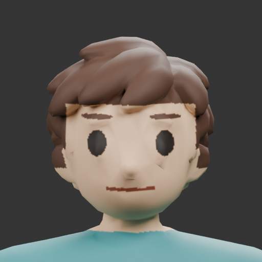
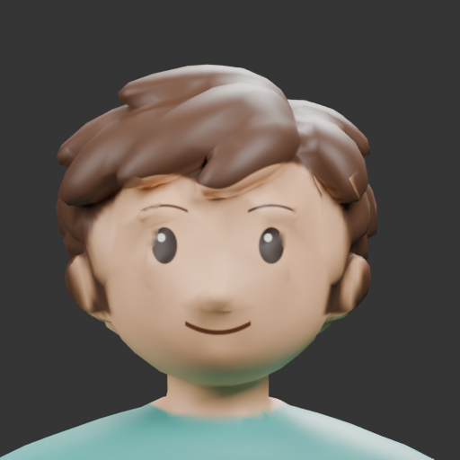
修正前 3ad862ac190776670c82df610c54a1def6a794914118cb11c1759b554e1cf270
修正後 ce320d1466191b1c95cf9ce36f2725740b73af02ca6ca2cc6ca59b0dd50c0f8f
配布用GLB 61ce44be0c7547ffc58ca3c3242ff86ed564246b6ca3515c73250e2117286fd2。描画後に画像の不要メタデータだけを整理しています。形状・画像データが変わっていないことの記録。
修正前 3ad862ac190776670c82df610c54a1def6a794914118cb11c1759b554e1cf270
修正後 ce320d1466191b1c95cf9ce36f2725740b73af02ca6ca2cc6ca59b0dd50c0f8f
配布用GLB 61ce44be0c7547ffc58ca3c3242ff86ed564246b6ca3515c73250e2117286fd2。描画後に画像の不要メタデータだけを整理しています。形状・画像データが変わっていないことの記録。
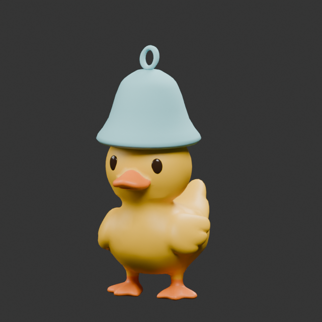
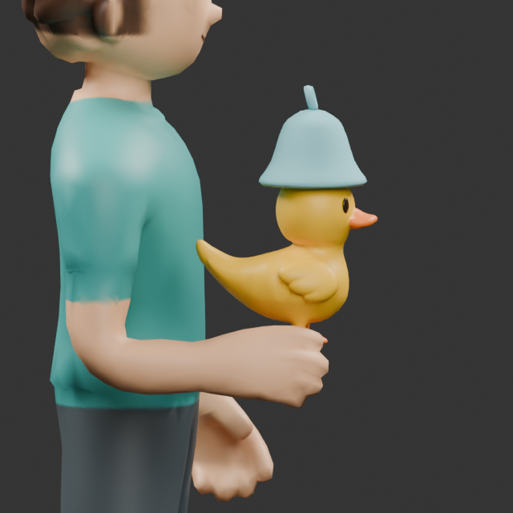
改変モデル・派生レンダー：Generated with Meshy 6 Lite / CC BY 4.0。改変：Sento Duck Explorer project。参照画像の権利とは別管理です。